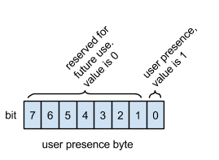

This section describes the status of this document at the time of its publication.
Other documents may supersede this document. A list of current FIDO Alliance publications and the
latest revision of this technical report can be found in the FIDO Alliance specifications index at
https://www.fidoalliance.org/specifications/.
This document was published by the FIDO Alliance as a Review Draft.
This document is intended to become a FIDO Alliance Proposed Standard.
If you wish to make comments regarding this document, please
Contact Us.
All comments are welcome.
REVIEW DRAFT
This is a Review Draft Specification and
is not intended to be a basis for any implementations as the Specification may change. Permission is
hereby granted to use the Specification solely for the purpose of reviewing the Specification. No rights
are granted to prepare derivative works of this Specification. Entities seeking permission to reproduce
portions of this Specification for other uses must contact the FIDO Alliance to determine whether an
appropriate license for such use is available.
Implementation of certain elements of this Specification may require licenses under third party intellectual
property rights, including without limitation, patent rights. The FIDO Alliance, Inc. and its Members
and any other contributors to the Specification are not, and shall not be held, responsible in any manner
for identifying or failing to identify any or all such third party intellectual property rights.
THIS FIDO ALLIANCE SPECIFICATION IS PROVIDED “AS IS” AND WITHOUT ANY
WARRANTY OF ANY KIND, INCLUDING, WITHOUT LIMITATION, ANY EXPRESS OR IMPLIED
WARRANTY OF NON-INFRINGEMENT, MERCHANTABILITY OR FITNESS FOR A
PARTICULAR PURPOSE.
Type names, attribute names and element names are written as code.
String literals are enclosed in “”, e.g. “UAF-TLV”.
In formulas we use “|” to denote byte wise concatenation
operations.
DOM APIs are described using the ECMAScript [ECMA-262] bindings
for WebIDL [WebIDL].
U2F specific terminology used in this document is defined in
[FIDOGlossary].
Symbolic constants such as U2F_REGISTER which are
referred to when defining messages in this documents have their
values defined in (See [U2FHeader] in bibliography].
1.1 Key Words
The key words “MUST”, “MUST NOT”, “REQUIRED”, “SHALL”, “SHALL
NOT”, “SHOULD”, “SHOULD NOT”, “RECOMMENDED”, “MAY”, and
“OPTIONAL” in this document are to be interpreted as
described in [RFC2119].
2. Introduction
Note: Reading the 'FIDO U2F Overview' (see
[U2FOverview] in bibliography) is recommended as a
background for this document.
U2F Tokens provide cryptographic assertions that can be verified
by relying parties. Typically, the relying party is a web
server, and the cryptographic assertions are used as
second-factors (in addition to passwords) during user
authentication.
U2F Tokens are typically small special-purpose devices that
aren't directly connected to the Internet (and hence, able to
talk directly to the relying party). Therefore, they rely on a
FIDO Client to relay messages between the token and the relying
party. Typically, the FIDO Client is a web browser.
The U2F protocol supports two operations, registration and
authentication. The registration operation introduces the
relying party to a freshly-minted keypair that is under control
of the U2F token. The authentication operation proves possession
of a previously-registered keypair to the relying party. Both
the registration and authentication operation consist of three
phases:
Setup: In this phase, the FIDO Client contacts the relying party
and obtains a challenge. Using the challenge (and possibly other
data obtained from the relying party and/or prepared by the FIDO
Client itself), the FIDO Client prepares a request message for
the U2F Token.
Processing: In this phase, the FIDO Client sends the request
message to the token, and the token performs some cryptographic
operations on the message, creating a response message. This
response message is sent to the FIDO Client.
Verification: In this phase, the FIDO Client transmits the
token's response message, along with other data necessary for
the relying party to verify the token response, to the relying
party. The relying party then processes the token response and
verifies its correctness. A correct registration response will
cause the relying party to register a new public key for a
user, while a correct authentication response will cause the
relying party to accept that the client is in possession of the
corresponding private key.
Fig. 1Three phases of Registration and Authentication
Above is a picture illustrating the three phases.
At the heart of the U2F protocol are the request messages sent
to the U2F token, and the response messages received from the
U2F token.1
Note that the request message is usually obtained by the FIDO
client from the relying party during the setup phase, and
therefore reaches the FIDO client as part of an HTTP response.
Similarly, the response message that is processed by the
relying party during the verification phase is sent by the FIDO
Client to the relying party in an HTTP request. Beware the
possibility of confusion when talking about requests and
responses!
Request messages are created by the relying party and consumed
by the U2F token. Response messages are created by the U2F
token and consumed by the relying party.
As the messages flow from relying party (through the FIDO
Client) to the U2F token and back, they undergo various
transformations and encodings. Some of these transformations
and encodings are up to the individual implementations and are
not standardized as part of FIDO U2F. For example, FIDO U2F
does not prescribe how request and response messages are
encoded between the FIDO Client and the relying party.
However, to ensure that U2F tokens from different vendors can
work across U2F-compliant web sites certain encodings are
standardized:
FIDO U2F standardizes a Javascript API that prescribes how a web
application can pass request messages into the FIDO Client (in
the case where the web browser is the FIDO Client), and what
the encoding of the response messages is.
FIDO U2F standardizes how request and response messages are to
be encoded when sent over from the client over the USB
transport to U2F tokens. In addition to specifying the
encoding, the transport level specification also specifies the
format for control messages to the tokens and the format for
the error responses from the tokens. We anticipate that FIDO
U2F will standardize how request and response messages are
encoded over other non-USB transports such as NFC or Bluetooth.
In this document we describe the "raw", or canonical, format of
the messages, i.e., without regard to the various encodings
that are prescribed in U2F standards or that implementors might
choose when sending messages around. The raw format of the
messages is important to know for two reasons:
The encoding of messages and parameters described elsewhere may
refer to the raw messages described in this document. For
example, a Javascript API might refer to a parameter of a
function as the Base64-encoding of a raw registration response
message. It is this document that describes what the raw
registration response message looks like.
Cryptographic signatures are calculated over raw data. For
example, the standard might prescribe that a certain
cryptographic signature is taken over bytes 5 through 60 of a
certain raw message. The implementor therefore has to know how
what the raw message looks like.
3. U2F message framing
The U2F protocol is based on a request-response mechanism,
where a requester sends a request message to a U2F device, which
always results in a response message being sent back from the
U2F device to the requester.
The request message has to be "framed" to send to the
lower layer. Taking the signature request as an example,
the "framing" is a way for the FIDO client to tell the
lower transport layer that it is sending a signature
request and then send the raw message contents. The
framing also specifies how the transport will carry back
the response raw message and any meta-information such as
an error code if the command failed.
Framing is defined based on the ISO7816-4:2005 APDU format.
3.1 Request Message Framing
The raw request message is framed as a command APDU. At a high
level, APDUs are framed in the following way:
CLA INS P1 P2 [Lc <request-data>] [Le]
Where:
CLA: Reserved to be used by the underlying transport
protocol (if applicable). The host application shall set this
byte to zero.
INS: U2F command code, defined in the following sections.
P1, P2: Parameter 1 and 2, defined by each command.
Lc: The length of the request-data.
If there are no request data bytes, Lc is
omitted.
Le: The maximum expected length of the
response data. If no response data are expected,
Le may be omitted.
The precise format of the APDU depends on the encoding choice.
There are two different encodings allowed for an APDU:
short and extended length. The differences are in the
way the length of the request data, Lc, and the
maximum length of the expected response, Le, are
encoded.
The choice of encoding varies depending on the needs of the
individual transport. Refer to the transport-specific encoding
documents for which encodings are allowed with each transport.
3.1.1 Short Encoding
In short encoding, the maximum length of request-data
is 255 bytes. Lc is encoded in the following
way:
Let Nc = | <request-data> |.
If Nc is 0, Lc is omitted.
Otherwise, Lc is encoded as a single byte
containing the value of Nc.
If the instruction is not expected to yield any response
bytes, Le may be omitted. Otherwise, in
short encoding, Le is encoded
in the following way:
Let Ne = the maximum length of the response
data. In short encoding, the maximum value of
Ne is 256 bytes.
For values of Ne between 1 and 255,
Lc contains the value of Nc.
When Ne = 256, Lc contains
the value 0.
3.1.2 Extended Length Encoding
In extended length encoding, the maximum length of
request-data is 65 535 bytes. Lc is encoded
in the following way:
Let Nc = | <request-data> |.
If Nc is 0, Lc is omitted.
Otherwise, Lc is encoded as:
0 MSB(Nc) LSB(Nc)
Where MSB(Nc) is the most significant byte
of Nc, and LSB(Nc) is the
least significant byte of Nc.
In other words, the request-data are preceded by
three length bytes, a byte with value 0 followed
by the length of request-data, in big-endian order.
If the instruction is not expected to yield any response
bytes, Le may be omitted. Otherwise, in
extended length encoding, Le is encoded
in the following way:
Let Ne = the maximum length of the
response data. In extended length encoding, the
maximum value of Ne is 65 536 bytes.
For values of Ne between 1 and 65 535,
inclusive, let
Le1 = MSB(Ne),
and Le2 = LSB(Ne), where
MSB(Ne) is the most significant
byte of Ne, and LSB(Ne) is
the least significant byte of Ne.
When Ne = 65 536, let
Le1 = 0 and
Le2 = 0.
When Lc is present, i.e. if
Nc > 0, Le is encoded
as:
Le1 Le2
When Lc is absent, i.e. if
Nc = 0, Le is encoded as:
0 Le1 Le2
In other words, Le has a single-byte
prefix of 0 when Lc is absent.
3.2 Response Message Framing
The raw response data is framed as a response APDU:
<response-data> SW1 SW2
Where SW1 and SW2 are the
status word bytes 1 and 2, respectively, forming a 16-bit status
word, defined below. SW1 is the most-significant byte,
and SW2 is the least-significant byte.
3.3 Status Codes
The following ISO7816-4 defined status words have a special meaning in U2F:
SW_NO_ERROR: The command completed successfully without error.
SW_CONDITIONS_NOT_SATISFIED: The request was
rejected due to test-of-user-presence being required.
SW_WRONG_DATA: The request was rejected due to an
invalid key handle.
Each implementation may define any other vendor-specific
status codes, providing additional information about an error
condition. Only the error codes listed above will be handled by
U2F FIDO Client, where others will be seen as general errors and
logging of these is optional.
4. Registration Messages
4.1 Registration Request Message - U2F_REGISTER
Fig. 2Registration Request Message
This message is used to initiate a U2F token registration. The
FIDO Client first contacts the relying party to obtain a
challenge, and then constructs the registration request
message. The registration request message has two parts:
The challenge parameter [32 bytes]. The challenge parameter is
the SHA-256 hash of the Client Data, a stringified JSON
data structure that the FIDO Client prepares. Among other
things, the Client Data contains the challenge from the relying
party (hence the name of the parameter). See below for a
detailed explanation of Client Data.
The application parameter [32
bytes]. The application parameter is the SHA-256
hash of the UTF-8 encoding of the application identity of
the application requesting the registration. (See
[FIDOAppIDAndFacets] in bibliography for details.)
This is an error message that is output by the U2F
token if no test-of-user-presence could be
obtained by the U2F token. The error message
details are specified in the framing for the
underlying transport (see Section "U2F Message
Framing" above).
4.3 Registration Response Message: Success
Fig. 3Registration Response Message
This message is output by the U2F token once it created a new
keypair in response to the registration request message. Note
that U2F tokens SHOULD verify user presence before returning a
registration response success message (otherwise they SHOULD
return a test-of-user-presence-required message - see above).
Its raw representation is the concatenation of the following:
A reserved byte [1 byte], which for legacy reasons has the value
0x05.
A user public key [65 bytes]. This is the (uncompressed)
x,y-representation of a curve point on the P-256 NIST elliptic
curve.
A key handle length byte [1 byte], which specifies the length of
the key handle (see below). The value is unsigned (range 0-255).
A key handle [length specified in previous field]. This a handle
that allows the U2F token to identify the generated key pair.
U2F tokens MAY wrap the generated private key and the
application id it was generated for, and output that as the key
handle.
An attestation certificate [variable length]. This is a
certificate in X.509 DER format. Parsing of the X.509
certificate unambiguously establishes its ending. The remaining
bytes in the message are
a signature. This is a ECDSA signature (on P-256)
over the following byte string:
A byte reserved for future use [1 byte] with the value 0x00.
This will evolve into a byte that will allow RPs to track
known-good applet version of U2F tokens from specific vendors.
The application parameter [32 bytes] from the registration
request message.
The challenge parameter [32 bytes] from the registration request
message.
The above key handle [variable length]. (Note that the key
handle length is not included in the signature base string.
This doesn't cause confusion in the signature base string, since
all other parameters in the signature base string are
fixed-length.)
The above user public key [65 bytes].
The signature is encoded in ANSI X9.62 format (see
[ECDSA-ANSI] in bibliography).
The signature is to be verified by the relying party using the
public key certified in the attestation certificate. The
relying party should also verify that the attestation
certificate was issued by a trusted certification authority.
The exact process of setting up trusted certification
authorities is to be defined by the FIDO Alliance and is
outside the scope of this document.
Once the relying party verifies the signature, it should store
the public key and key handle so that they can be used in
future authentication operations.
This message is used to initiate a U2F token authentication. The
FIDO Client first contacts the relying party to obtain a
challenge, and then constructs the authentication request
message. The authentication request message has five parts:
Control byte (P1). The control byte is determined by the FIDO Client
- the relying party cannot specify its value. The FIDO Client
will set the control byte to one of the following values:
0x07 ("check-only"): if the control byte is set to 0x07 by the
FIDO Client, the U2F token is supposed to simply check whether
the provided key handle was originally created by this token,
and whether it was created for the provided application
parameter. If so, the U2F token MUST respond with an
authentication response
message:error:test-of-user-presence-required (note that despite
the name this signals a success condition). If the key handle
was not created by this U2F token, or if it was created for a
different application parameter, the token MUST respond with an
authentication response message:error:bad-key-handle.
0x03 ("enforce-user-presence-and-sign"): If the FIDO client sets
the control byte to 0x03, then the U2F token is supposed to
perform a real signature and respond with either an
authentication response message:success or an appropriate error
response (see below). The signature SHOULD only be provided if
user presence could be validated.
Other control byte values are reserved for future use.
During registration, the FIDO Client MAY send authentication
request messages to the U2F token to figure out whether the U2F
token has already been registered. In this case, the FIDO client
will use the check-only value for the control byte. In all other
cases (i.e., during authentication, the FIDO Client MUST use the
enforce-user-presence-and-sign value).
The challenge parameter [32 bytes]. The challenge parameter is
the SHA-256 hash of the Client Data, a stringified JSON
data structure that the FIDO Client prepares. Among other
things, the Client Data contains the challenge from the relying
party (hence the name of the parameter). See below for a
detailed explanation of Client Data.
The application parameter [32 bytes]. The application parameter
is the SHA-256 hash of the UTF-8 encoding of the application identity of the
application requesting the authentication as provided by the
relying party.
A key handle length byte [1 byte], which specifies the length of
the key handle (see below). The value is unsigned (range 0-255).
A key handle [length specified in previous field]. The key
handle. This is provided by the relying party, and was obtained
by the relying party during registration.
This is an error message that is output by the U2F
token if no test-of-user-presence could be
obtained by the U2F token. The error message
details are specified in the framing for the
underlying transport (see Section "U2F Message
Framing" above).
5.3 Authentication Response Message: Error: Bad Key Handle
This is an error message that is output by the U2F
token if the provided key handle was not originally
created by this token, or if the provided key handle
was created by this token, but for a different
application parameter. The error message details are
specified in the framing for the underlying transport
(see Section "U2F Message Framing" above).
5.4 Authentication Response Message: Success
Fig. 5Authentication Response Message: Success
This message is output by the U2F token after processing/signing
the authentication request message described above. Its raw
representation is the concatenation of the following:
A user presence byte [1 byte]. Bit 0 is set to 1, which means
that user presence was verified. (This version of the protocol
doesn't specify a way to request authentication responses
without requiring user presence.) A different value of Bit 0,
as well as Bits 1 through 7, are reserved for future use. The
values of Bit 1 through 7 SHOULD be 0:

Fig. 6User Presence Byte Layout
A counter [4 bytes]. This is the big-endian representation of a
counter value that the U2F token increments every time it
performs an authentication operation. (See Implementation
Considerations [U2FImplCons] for more detail.)
a signature. This is a ECDSA signature (on P-256)
over the following byte string:
The application parameter [32 bytes] from the authentication
request message.
The above user presence byte [1 byte].
The above counter [4 bytes].
The challenge parameter [32 bytes] from the authentication
request message.
The signature is encoded in ANSI X9.62 format (see
[ECDSA-ANSI] in bibliography).
The signature is to be verified by the relying party using the
public key obtained during registration.
6. Other Messages
6.1 GetVersion Request and Response - U2F_VERSION
The FIDO Client can query the U2F token about the U2F protocol
version that it implements. The protocol version described in
this document is U2F_V2.
The response message's raw representation is the ASCII
representation of the string 'U2F_V2' (without quotes, and
without any NUL terminator).
The command takes no flags, i.e. P1 and P2 are 0, and takes
no data as input. As a result, the complete layout of this
command in short encoding is, in hexadecimal form:
CLA
INS
P1
P2
Le
00
03
00
00
00
The layout of this command in extended length
encoding is, in hexadecimal form:
CLA
INS
P1
P2
Le
00
03
00
00
00 00 00
6.2 Extensions and vendor-specific messages
Command codes in the range
between U2F_VENDOR_FIRST
and U2F_VENDOR_LAST may be used for
vendor-specific implementations. For example, the
vendor may choose to put in some testing
commands. Note that the FIDO client will never
generate these commands. All other command codes are
RFU and may not be used.
7. Client Data
Term
Definition
websafe-base64 encoding
This is the "Base 64 Encoding with URL and Filename Safe
Alphabet" from Section 5 in [RFC4648] without padding.
stringified javascript object
This is the JSON object (i.e., a string starting with "{" and
ending with "}") whose keys are the property names of the
javascript object, and whose values are the corresponding
property values. Only "data objects" can be stringified, i.e.,
only objects whose property names and values are supported in
JSON.
The registration and authentication request messages contain a
challenge parameter, which is defined as the SHA-256 hash of a
(UTF8 representation of a) stringified JSON data structure that
the FIDO client has to prepare. The FIDO Client MUST send the
Client Data (rather than its hash - the challenge parameter) to
the relying party during the verification phase, where the
relying party can re-generate the challenge parameter (by
hashing the client data), which is necessary in order to verify
the signature both on the registration response message and
authentication response message.
In the case where the FIDO Client is a web browser, the client
data is defined as follows (in WebIDL):
the constant 'navigator.id.getAssertion' for authentication,
and 'navigator.id.finishEnrollment' for registration
challenge of type DOMString
the websafe-base64-encoded challenge provided by the relying
party
origin of type DOMString
the facet id of the caller, i.e., the web origin of the
relying party.
(Note: this might be more accurately called 'facet_id', but
for compatibility with existing implementations within Chrome we keep the legacy name.)
cid_pubkey of type (DOMString or JwkKey)
The Channel ID public key used by this browser to communicate
with the above origin. This parameter is optional, and missing if the
browser doesn't support Channel ID. It is present and set to the
constant 'unused' if the browser supports Channel ID, but is not using
Channel ID to talk to the above origin (presumably because
the origin server didn't signal support for the Channel ID TLS
extension).
Otherwise (i.e., both browser and origin server at the above
origin support Channel ID), it is present and of type JwkKey.
The JwkKey is a dictionary representing the public key
used by a browser for the Channel ID TLS
extension. The current version of the Channel ID draft
prescribes the algorithm ([ECDSA-ANSI] in
bibliography) and curve used, so the dictionary will
have the following parameters
from which (together with challenge and application parameters)
the signature base string and signature can be extracted, and
verified with the public key from the attestation cert.
8.2 Authentication Example
Let's assume we have a U2F device with private key:
The above signature and signature base string can be
reconstructed from the authentication response message and the
challenge and application parameters, and can be verified with
the above public key.
9. Implementation Considerations
Earlier revisions of the FIDO U2F specifications defined the
U2F_VERSION command with the following byte layout:
CL
IN
P1
P2
L0
L1
L2
Le
00
03
00
00
00
00
00
00 00
This is not compatible with ISO 7816-4. (Compatible encodings
are defined earlier in this document.)
For maximum compatibility with U2F Authenticators that followed
the earlier specification for the U2F_VERSION command, U2F Clients
may choose to support this older encoding over the HID protocol,
the only protocol defined which used this encoding.